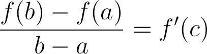

If f is continuous over [a, b] and differentiable over (a, b), then the following is true.
Mean Value Theorem:
The slope of the tangent line will equal the slope of the secant line at at least one point c within (a,b).

Rolle's Theorem:
This is a special case of the mean vaule theorem that applies if the slope of the secant line is 0. It states that there will be a place where the slope of the tangent line is zero within (a, b).